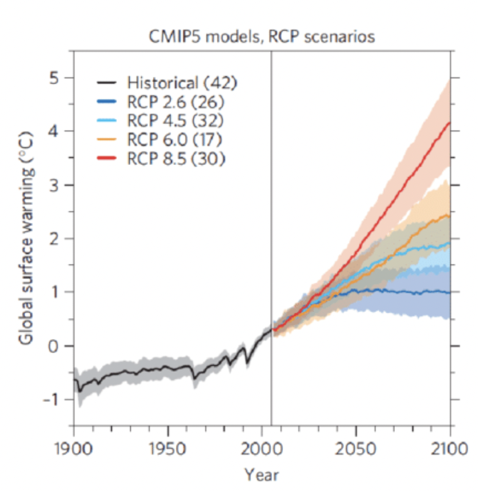
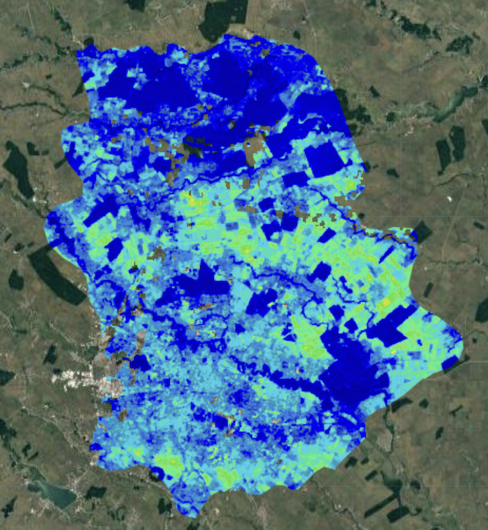
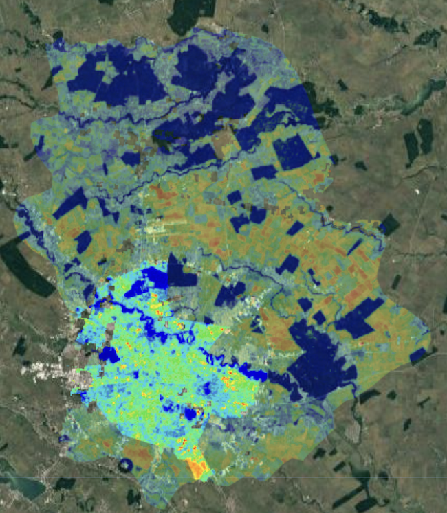
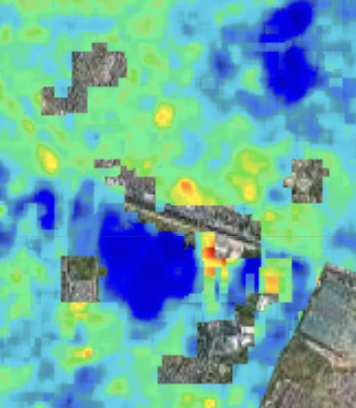
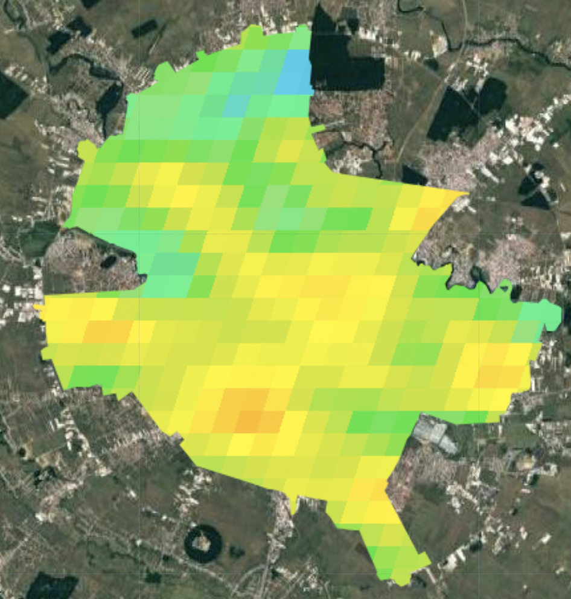
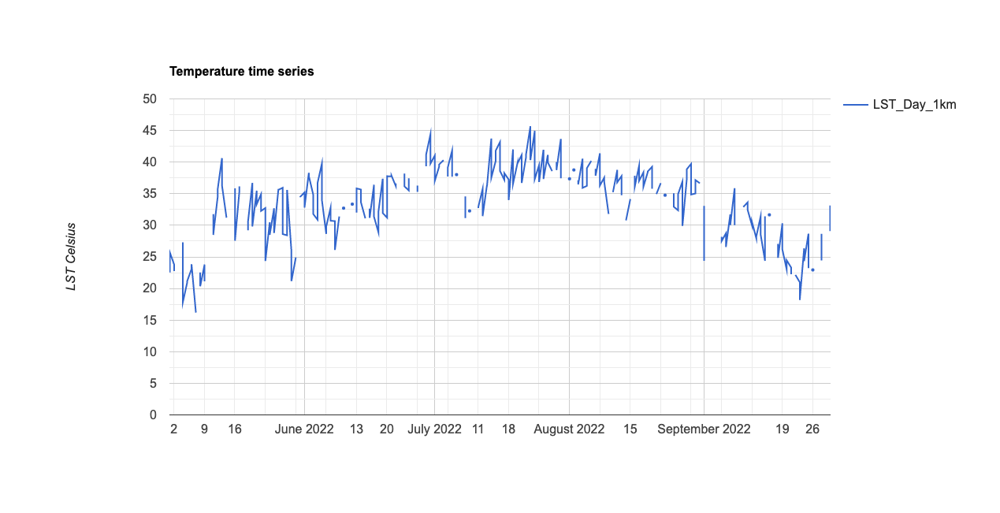
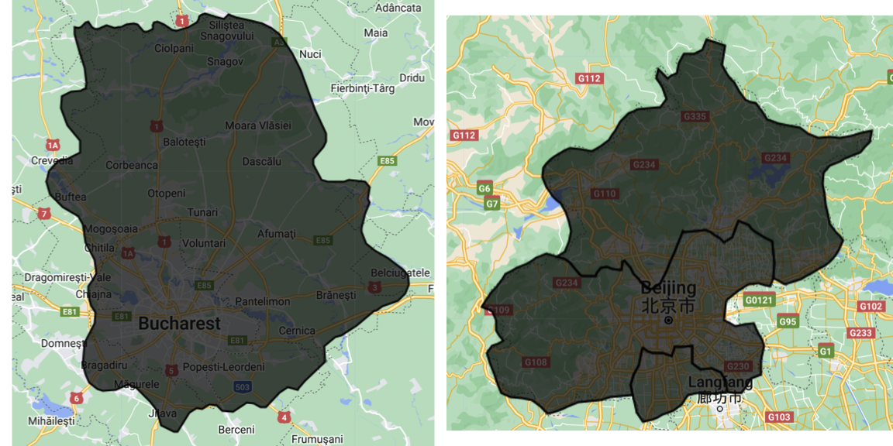

OVERVIEW
- Understanding the importance of temperature on a local and international scale and how it can influence the environment and living conditions
- discussing UHI’s and how their correct identification can support policy implementation and help cities reach SDG’s
- Using L-8 and MODIS to explore temperature across urban areas
- understanding 2 day revisit time between Terra and Aqua and comparing how results change between the two
- understanding the LST dynamics in Bucharest
- Comparing outputs between city defined Bucharest shapefile and GEE accessible Bucharest general area delimitations
Setting the scene
Different global warming predictions exist, with experts trying to understand and estimate how human interaction with out environment can bring different possible scenarios. To illustrate these different possible outcomes, researchers have been using RCP’s to illustrate how our actions, or lack thereof, can influence global warming. The below image illustrates the evolution of the various different scenarios (Bowyer et al. (2014))

The different RCP values represent different actions taken at national and international level, with the following examples:
RCP2.6 - “very stringent pathway” - high global effort to keep rising temperatures below 2°C
RCP4.6 - “intermediate scenario” - most probable baseline scenario which accounts for the exhaustible nature of non-renewable fossil fuels
RCP6.0 - “high emission” - emissions will peak in 2080 and stabilisation on taking place in end of 21st century
RCP8.5 - “very high emission” - emissions will rise non-stop throughout the 21st century considered the worst-case scenario possible
For this reason, properly analysing temperature, through Landsat or MODIS (or any other means) is important in understanding how heat evolves through time, seeing the effects on global warming on a global scale.
It also allows researchers to have insight on local level population insights and can support the well being of individuals. Indeed, indentifiying Urban Heat Islands, areas with dense concentrations of man-made buildings which accumulate heat, and implementing the correct policies to lower the temperature of these areas will benefit the living conditions of local populations. This is ever more so important as it allows cities to be in line with SDG
How to work with temperature in GEE?
Landsat-8
L-8 has two thermal infrared band (c.f. with Band 10 and 11) which allow it to retrieve precise information on temperature trends, using single-channel or split-window algorithms to make these insights (Jiménez-Muñoz et al. (2014)). In our Bucharest analysis, we only use a single channel analysis to analyse our area, using band 10 from data between May and September 2022.
We run our first analysis on the Bucharest region, as delimited by the GAUL . With a temperature range between 20°C and 50°C (blue being coldest and red warmest), we see that our initial results are not too successful as much of the image is blue. This makes sense as Bucharest warmest ever temperature was of 42.2°C in 2000, therefore even with accumulation of heat, 50°C is a high margin.

To remedy this, we reduce the range to 20-45°C. With this change, the results are more insightful and we better visualise areas with high heat concentration. We also add the actual Bucharest outline (with local shapefile) which will be the area we focus on from this point forward:

The output allows us to better see the variations in temperature but we also notice that some areas do not have values, either due to the lack of values, constant cloud cover over the area or simply the area being under 20°C:

MODIS AQUA AND TERRA
Now moving on to the MODIS data, we use Aqua and Terra to visualise temperature in Bucharest. Our first results are less contrasted than for the L-8 data, and we also see that the area’s previously missing the L-8 are available for MODIS

For better understanding of LST distribution around the city, the graph below provides precise quantitative information. We see peaks around August, with LST temperatures reaching 45°C. We also notice some data limitations as certain days do not seem to have information (i.e. early September or second quarter of July). This is likely due to some limiting factor, which could be simply cloud cover, as MODIS cannot observe the surface when cloud cover is present (NASA: NSDIC)

To provide better understanding of the above chart, we decide to use an interactive version of the chart, which allows for detailed information on the different temperature characteristics over time.
LST Interactive Chart - Bucharest summer 2022
Personal Reflection
As the Bucharest area studied in this entry is only composed on a single spatial unit, we can only conduct statistics on a singular spatial unit. This is applicable both for Bucharest in the shapefile form and through the GAUL.
In further works, we would look to use areas which have spatial area separations which would allow us to make temperature comparisons between various areas or neighborhoods (depending on the granularity of the data available)
Attaching package: 'cowplot'The following object is masked from 'package:lubridate':
stamp
We would look to create a similar LST chart as in the previous section, but adding more lines for different recorded areas or sectors.
It would also be interesting to potential indexes for Heat, but also other measures such as moisture or dryness, to understand how certain urban areas are and how they influence the quality of life of local people.
Thank you for reading!
Finally, I highly values the skills, techniques and approaches used throughout the create of this Diary! I believe that, now accustomed to this panoply of methods to analyse remote sensing imagery, I have a much more developed understanding of current climate issues, but also how to implement and propose viable solutions. I look forward to continue developing these skills and had fun personalizing this work!